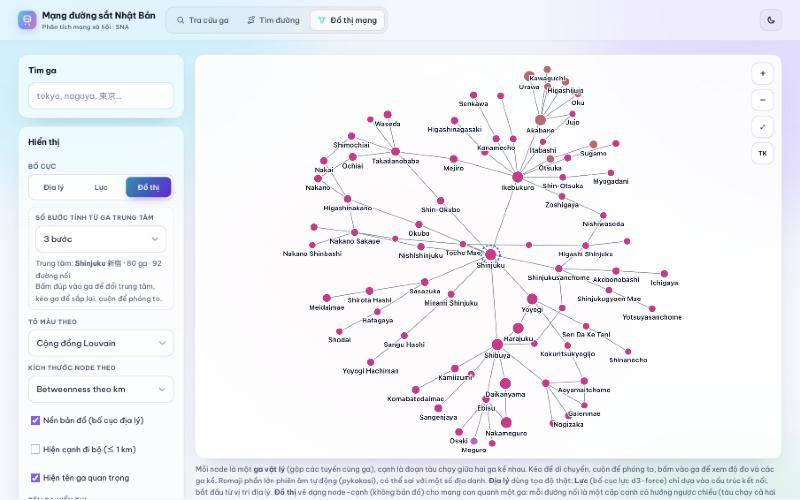
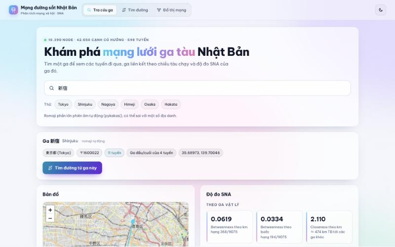
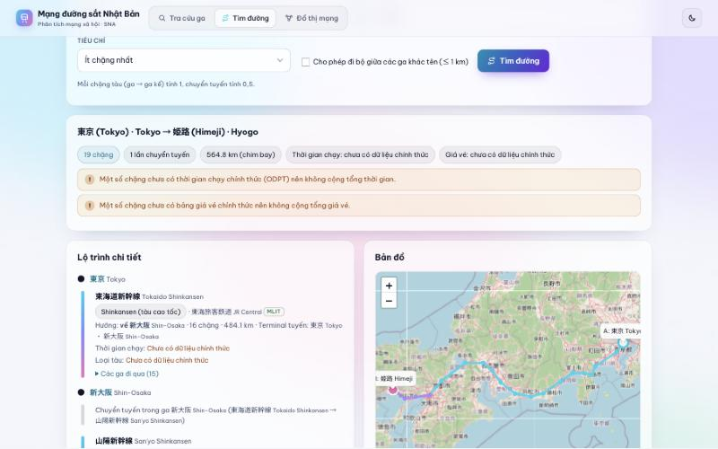

Phân tích mạng xã hội · Bài cá nhân · Ý tưởng & kế hoạch
Mạng lưới ga tàu Nhật Bản
dưới góc nhìn SNA
Mô hình hóa mạng đường sắt toàn Nhật Bản thành đồ thị có hướng: mỗi ga là một node, có tàu chạy từ ga này sang ga kế tiếp là một cạnh. Từ đó phân tích bằng các độ đo mạng và làm web tra cứu ga, tìm đường.
Phím ← → để chuyển slide · F toàn màn hình · T đổi sáng/tối · tên tiếng Nhật kèm romaji (phiên âm) và nghĩa tiếng Việt.
Dữ liệu · Đã thực hiện
Nguồn dữ liệu: ba nguồn chính thức, không ước tính
| Nguồn | Lấy được gì | Cách lấy | Trạng thái |
|---|---|---|---|
| HeartRails Express API express.heartrails.com | Tên ga, tuyến, tỉnh, tọa độ, mã bưu chính, ga trước / ga sau trên tuyến | Crawl 3 cấp: getPrefectures (1) → getLines (47) → getStations (598) = 646 request | Đã crawl |
| MLIT N02 国土数値情報 Kokudo Sūchi Jōhō (Dữ liệu số đất đai quốc gia, Bộ Giao thông NB) | Công ty vận hành, loại tuyến (JR / tư nhân / tàu điện ngầm / monorail / Shinkansen…) | Tải bộ GeoJSON toàn quốc, giấy phép CC BY 4.0 | Đã tải |
| ODPT Open Data for Public Transportation | Giờ tàu thật (thời gian chạy từng chặng), loại tàu, giá vé chính thức giữa hai ga | API TrainTimetable, TrainType, RailwayFare; chủ yếu vùng Kanto | Chờ duyệt key |
# getStations?line=JR山手線 (tuyến JR Yamanote) { "name": "渋谷", // Shibuya "x": 139.7012, "y": 35.6589, "prev": "恵比寿", // Ebisu "next": "原宿" // Harajuku }
Cột nào nguồn chính thức không có thì để trống. Mỗi phản hồi API được lưu cache để chạy lại không phải gọi lại.
Xử lý dữ liệu
Từ dữ liệu crawl thành đồ thị
新宿@JR山手線; gộp node cùng tên + cùng tỉnh + ≤ 1 km thành ga vật lýprev/next: tàu chạy A → B và B → A, ghi ga cuối theo hướng chạy, khoảng cách kmpykakasi + bảng sửa tay)Tàu chạy sang ga kế tiếp, mỗi chiều là một cạnh.
Chuyển tuyến trong cùng một ga vật lý.
Đi bộ giữa hai ga khác tên ở gần nhau.
Tàu nhanh bỏ qua ga, có giờ thật (khi có ODPT).
Kiểm tra: không có cạnh trỏ tới node không tồn tại, mỗi cạnh rail có cạnh ngược, ghi số dòng sau từng bước làm sạch.
Trực quan hóa
Trực quan hóa đồ thị mạng ga


Dự kiến: màu node theo cộng đồng, kích thước theo độ quan trọng của ga, sau khi tính độ đo.
Ý tưởng ứng dụng
Web tra cứu mạng ga tàu
Một trang web tĩnh, đọc trực tiếp các file CSV sau bước xử lý, không cần server. Người không đọc được tiếng Nhật vẫn dùng được nhờ romaji.
1. Tra cứu ga
Gõ tên ga (romaji hoặc chữ Nhật) → ga này nối tới những ga nào, theo chiều tàu chạy, thuộc tuyến nào, đi về ga cuối nào.
2. Tìm đường A → B
Nhập hai ga → lộ trình từng chặng: tuyến, hướng chạy, chỗ chuyển tuyến; thời gian, giá vé khi có dữ liệu ODPT.
3. Xem đồ thị
Xem cả mạng trên bản đồ hoặc mạng con quanh một ga; chọn một ga để xem thông tin và kết quả phân tích của ga đó.
Công nghệ dự kiến: HTML + JavaScript, đọc CSV bằng PapaParse, bản đồ Leaflet + OpenStreetMap, vẽ đồ thị bằng canvas + d3.
Ý tưởng ứng dụng
Tra cứu ga: ga A nối với những ga nào?

Nhập
Tên ga bằng romaji (Shinjuku) hoặc chữ Nhật (新宿), có gợi ý khi gõ.
Hiển thị
- Các tuyến đi qua ga, công ty vận hành
- Ga kế tiếp theo từng chiều chạy và ga cuối của chiều đó
- Ga chuyển tuyến, ga đi bộ được
- Vị trí trên bản đồ
Ý tưởng ứng dụng
Tìm đường: đi từ ga A đến ga B

Tiêu chí
- Ít chặng nhất
- Ít chuyển tuyến nhất
- Ngắn nhất theo km
- Nhanh nhất (khi có giờ tàu ODPT)
Kết quả
Từng chặng: tuyến, hướng chạy (về ga cuối nào), số ga, thời gian, giá vé; lộ trình vẽ trên bản đồ.
Thời gian, giá vé chỉ hiện khi có dữ liệu chính thức; thiếu thì ghi “chưa có dữ liệu”.
Ý tưởng ứng dụng
Ý nghĩa và bước tiếp theo
Ứng dụng có thể dùng để
- Tìm ga đầu mối trung chuyển, ga cầu nối giữa các vùng.
- Thấy điểm nghẽn: sự cố ở ga nào có thể cắt liên lạc giữa các vùng.
- Xem mạng tự chia thành những cụm vùng nào.
- Hỗ trợ người đi tàu tra cứu, tìm đường bằng romaji.
Bước tiếp theo
- Hoàn thiện đồ thị, chỉnh để tổng ≈ 50k bản ghi.
- Tính các độ đo: degree, betweenness, closeness, cộng đồng Louvain, liên thông.
- Khi có key ODPT: thêm giờ tàu, loại tàu, giá vé.
- Hoàn thiện web từ bản mẫu, viết báo cáo.
Tóm tắt
Đã có dữ liệu ga, tuyến toàn Nhật Bản;
tiếp theo là tính độ đo và hoàn thiện web.
Nguồn: HeartRails Express · 国土数値情報 N02 (Kokudo Sūchi Jōhō), MLIT, CC BY 4.0 · ODPT · OpenStreetMap.
Cảm ơn thầy và các bạn đã lắng nghe!